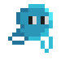

O que é o jogo Sentinelas da Praia? 
Proposta
O jogo Sentinelas da Praia surgiu primeiro como um protótipo para a Game Jam CE - Mar de Ideias, e mais tarde foi finalizado para uma versão jogável, apresentada na feira do conhecimento 2025.
Tema
Jogadores devem investir em tartarugas para proteger a praia do avanço do lixo em direção ao oceano. O jogo tem gráficos e trilha cartunescos, o que dá leveza a narrativa, apesar do tema importante.
Características principais
- Estilo de arte em Pixel Art
- Mecânica de Tower Defense
- Foco em conscientização ambiental
Equipe
- Programador líder: Renan
- Artista gráfico e animador: John
- Designer UI e UX: Henrique e Lucas
- Trilha sonora e sonoplastia: João Amauri